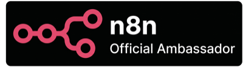

BNI K-Chapter · Feature Presentation

구조가 없으면,
AI도 없습니다.
AI도 없습니다.
회사의 일하는 구조를 만드는 일 — 데이터 · 일 · 판단 셋을 한 자리에
발표
김지명
쏘드 컴퍼니
쏘드 컴퍼니
자격
Notion · n8n 글로벌 공식 앰버서더
B2B 업무 시스템 7년차
B2B 업무 시스템 7년차
시간 · 청중
BNI K-Chapter
10분 Feature Presentation
10분 Feature Presentation
01 / 22
2026 · 05 · 13
발표자 · 자기소개
SSOD
김지명
쏘드 컴퍼니 · 대표
B2B 7년차
하는 일
회사의
일하는 구조를 만듭니다.
일하는 구조를 만듭니다.
데이터 · 일 · 판단 — 셋을 한 자리에.
02 / 22
자격 · 글로벌 공식 앰버서더
SSOD
둘 다 — 한국 1인.
Notion · n8n — 글로벌 공식 앰버서더 자격, 한국에서 단 한 명이 보유합니다.
03 / 22
자기소개 · 활동 영역
SSOD
고객 스펙트럼
직원 3명 사무실
→ 수천억 코스닥
→ 수천억 코스닥
자영업·전문직·중견기업까지 — 같은 진단 렌즈.
도구
Notion · n8n · Claude Code
세 도구로 데이터·일·판단을 잇습니다.
유튜브 구독자
4,750명
SSOD with Notion · Notion Camp 워크숍 협업
04 / 22
오프닝 · 세 가지 질문
SSOD
본론 전에, 세 가지만 묻겠습니다.
하나라도 "음, 어디 있더라…" 하셨다면 — 그 회사에 ChatGPT 깔아도 일이 크게 바뀌진 않습니다.
Q · 1
어제 결정한 일이 — 어디 적혀 있습니까?
Q · 2
어제 들어온 견적 요청은 — 어디로 갔습니까?
Q · 3
지난달 가장 큰 매출은 누가 가져왔는지 — 한 번에 답이 나옵니까?
세무사 → 거래처 자료 · F&B 사장 → 어제 매출 · 디자이너 → 작년 견적 — 직군은 달라도 같은 질문입니다.
05 / 22
진단 프레임 · 01 · 데이터
SSOD
①
데이터
SoR
System of Record
일하는 구조의 첫 번째 부분 — 사실이 적힌 곳
정의
진짜 사실이 모인 곳
변하지 않는 기록
- 어제 누가 뭘 샀고, 재고가 얼마고, 단골이 누군지
- ERP · 회계 시스템 · 고객 명단 · 거래 기록
- 변경되면 안 되는 사내 표준 정보
06 / 22
진단 프레임 · 01 · 통찰
SSOD
①
데이터
SoR
System of Record
핵심 통찰
데이터만으로는 — 부족합니다.
SoR에는 거래 데이터뿐만 아니라 — 우리 회사가 어떻게 판단하는지도 같이 적혀 있어야 합니다. 이게 빠진 회사가 가장 많습니다.
07 / 22
진단 프레임 · 02 · 일하는 곳
SSOD
②
일하는 곳
SoE
System of Engagement
두 번째 부분 — 메시지·결정이 흐르는 자리
정의
사람과 사람이 만나는 디지털 공간
직원들이 진짜로 일하는 자리
- 카톡방 · 슬랙 · 노션
- 이메일 · 결재 시스템 · 협업 도구
- 알림 · 요청 · 응답 · 승인이 흐르는 통로
08 / 22
진단 프레임 · 02 · 통찰
SSOD
②
일하는 곳
SoE
System of Engagement
핵심 통찰
AI는 이 공간 안으로 들어와야 합니다.
AI 에이전트가 일하려면 — 사람들이 이미 모여 있는 공간 안에서 호출되고 응답해야 합니다. "AI 콘솔 열어서 명령" 모델은 무너집니다.
09 / 22
진단 프레임 · 03 · 판단 · 핵심
SSOD
③
판단
SoI
System of Intelligence
세 번째 부분 — 데이터가 결정으로 바뀌는 자리
정의
결정이 나오는 자리
데이터 → 의미 → 행동
- "어제 매출 안 좋네, 오늘 이거 더 들이자."
- 옛날엔 — 사장님이 그 자리에 있었음
- 지금은 — 대시보드 · AI 에이전트가 받고 있음
10 / 22
진단 프레임 · 03 · 통찰 · 발표의 thesis
SSOD
③
판단
SoI
System of Intelligence
핵심 통찰
사람 머릿속 룰이
데이터 옆에 같이 적혀야 합니다.
데이터 옆에 같이 적혀야 합니다.
"이 단골은 신상 빨리 알린다"
"재고 30% 이하면 발주"
— 이런 기준이 데이터 옆에 같이 적혀야 AI가 그 자리를 받습니다.
11 / 22
브랜드 의미 · 회사 이름 풀이
SSOD
SSOD
=
Sync with Self · Other · Data
회사 이름 자체가 — 개인 · 조직 · 데이터를 한 자리에 맞춰서 일하는 구조를 만드는 일입니다.
12 / 22
브랜드 의미 · 프레임 매핑
SSOD
SSOD 세 글자가 — 진단 프레임 셋과 맞물립니다.
S
Sync with Self
나 자신과의 정렬
→
판단
SoI
S
Sync with Other
사람 · 조직과의 정렬
→
일하는 곳
SoE
D
Sync with Data
데이터와의 정렬
→
데이터
SoR
개인 · 조직 · 데이터 — 셋이 한 자리에 맞물린 회사 = 일하는 구조가 있는 회사. 그 위에서만 AI가 작동합니다.
13 / 22
한 줄 · take-away
SSOD
데이터는 사장님 노트북에 · 일은 카톡방에 · 판단은 사장님 머릿속에
구조가 없으면,
AI도 없습니다.
AI도 없습니다.
데이터 · 일 · 판단 — 셋이 한 자리에 맞물려야 "회사의 일하는 구조"가 됩니다.
14 / 22
사례 · BEFORE → AFTER
SSOD
일하는 구조가 끊긴 회사 — 다시 짭니다.
상장사·중견기업 onsite — 데이터·일·판단을 한 자리로.
Before
데이터는 있었습니다
SoR · SoE 둘 다 정상
- ERP에 매출·재고·운영 매일 정확히 적재
- 결재·보고 라인 모두 시스템화
- 그런데 — 데이터 뽑을 줄 아는 사람이 한 명
- 그 사람 휴가 = 임원도 어제를 모름
→ 판단(SoI)이 사람 한 명에 묶여 있었던 셈.
After
일하는 구조 다시 깔기
기다림이 사라진 회사
- ERP 숫자 → 노션 데이터베이스 자동 파이프라인
- 본사·현장·임원 동선을 노션 안으로 통일
- 매일 출근 전, 어제 지표가 임원 화면에 정리
- 이상 발견 시 — 현장 부서에 업무 자동 분배
규모가 달라도 만드는 구조는 같습니다. 직원 3명 사무실부터 수백명 회사까지 — 일하는 구조가 없으면 AI는 똑같이 못 들어옵니다.
15 / 22
두 회사 합성 · NDA 익명
AI 시대 · 본질 · 진짜 비싼 일
SSOD
AI BUILD ECONOMY
사람 머릿속 룰을
시스템에 옮겨 적는 일.
시스템에 옮겨 적는 일.
— 이게 진짜 비싼 일입니다.
팔란티어가 비싼 이유
AI는 일하는 구조를 — 스스로 못 만듭니다.
미국 팔란티어가 그 일로 비쌉니다. 데이터 옆에 회사의 판단 기준을 같이 적어주는 일 — AI는 그 위에서만 돌아갑니다.
16 / 22
참조 · Palantir Ontology layer
그 자리에 · 쏘드가 들어갑니다
SSOD
한국에선 — 같은 일을
쏘드가 — 현장에 들어가서 합니다.
Notion · n8n · Claude Code — 세 도구로 데이터·일·판단을 한 자리에 맞춥니다.
17 / 22
SSOD가 쓰는 도구 · 세 자리
SSOD
세 도구로 — 데이터·일·판단을 한 자리에.
진단 프레임 셋에 — 도구 하나씩.
일하는 곳SoE
Notion
메시지 · 결재 · 문서
사람들이 만나는 자리를 한 곳에 모읍니다.
데이터SoR
XL
→

엑셀 → Notion
흩어진 시트 통합
회사 곳곳에 흩어진 엑셀들을 한 자리로 모아옵니다.
판단SoI
Claude
룰 → 코드
사람 머릿속 판단 기준을 시스템에 옮겨 적습니다.
18 / 22
네 번째 도구 · 셋을 잇는 혈관
SSOD
혈관 — 셋을 흐르게 하는 자리
Notion
↔
엑셀 → Notion
↔
Claude
n8n
셋 사이로 데이터를 흐르게 하는 자동화.
노드와 노드를 잇는 파이프라인 — 회사의 혈관입니다.
19 / 22
혈관 메타포 · n8n
함께한 일들 · 만들고 있는 자리
SSOD
회사의 일하는 구조 — 현장에서 만들고 있습니다.
강의 · 워크숍 · 컨설팅 — 같은 일을, 다른 자리에서.
Photo 01
Notion Camp HR
2025-12 · 본사 협업
2025-12 · 본사 협업
Notion 본사와 HR 시스템 정리
Notion Camp · 공식 워크숍
Photo 02
기업 컨설팅
상장사·중견기업 onsite
상장사·중견기업 onsite
상장사 데이터·일·판단 잇기
상장사·중견기업 onsite 6개월
Photo 03
강연 · 세미나
n8n · Notion 공식
n8n · Notion 공식
진단 렌즈 강연으로 공유
n8n · Notion 공식 행사
Photo 04
자유 슬롯
유튜브·고객사 등
유튜브·고객사 등
구독자와 진단 렌즈 공유
SSOD with Notion · 4,750명
20 / 22
Closing · 오늘의 한 줄
SSOD
구조가 없으면,
AI도 없습니다.
AI도 없습니다.
그 구조를 — 쏘드가 만듭니다.
일하는 구조 없는 자리에 AI만 앉혀 놓는 회사 — 더 안 만들고 싶어서요.
Photo Slot
발표 현장 / Notion Camp 워크숍 / 강연 사진
21 / 22
2026 · 05 · 13 · BNI K-Chapter
Closing · 오늘의 부탁 한 줄
SSOD
오늘의 부탁 한 줄
거래처·지인 중에 — ERP는 있는데 엑셀에 의존하거나, 데이터·일·판단이 사장님 머리에만 있는 회사 떠오르시면 — 저를 떠올려주세요.
발표자
김지명
쏘드 컴퍼니 대표
쏘드 컴퍼니 대표
하는 일
회사의 일하는 구조 만들기
Notion · n8n · Claude Code
Notion · n8n · Claude Code
오늘의 한 줄
구조가 없으면 AI도 없습니다
데이터 · 일 · 판단
데이터 · 일 · 판단
22 / 22
2026 · 05 · 13 · BNI K-Chapter